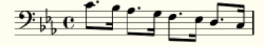

Introduction¶
What is LilyLib?¶
When musicians talk about a piece of music they don’t do so note-by-note, rather they talk about higher-level structures; scales, arpeggios, harmonies, motifs, key changes, and so on. Nonetheless sheet music adopts the note-by-note approach, as does Lilypond; a typesetting language for creating sheet music. Here’s a basic example illustrating this difference:
“Play a descending scale in C minor, from middle C, with a swing rhythm.”
But what if we could create sheet music directly from the higher-level structures musicians talk about? This is where LilyLib comes in: LilyLib is a python library that allows the user to describe a piece of music in terms of the concepts that are familiar to musicians. LilyLib automatically compiles into Lilypond, which can itself be compiled into sheet music. Here’s the LilyLib for the scale above:
self.score["bass"] = scale('c`', 'c', ['8.', 16], key="C Minor")
Not quite as familiar as spoken language, but note that it does not list the individual notes of the scale. Instead it calls a function called scale, providing it with the key (C minor), the start (c`) and stop (c) points, and a list of rhythms (8., 16). LilyLib does the rest: when this file is executed it outputs Lilypond which can then be converted into the pdf shown above.
Why use LilyLib?¶
LilyLib is scalable¶
Many pieces repeat certain motifs or patterns. LilyLib lets the user extract these as functions and repeatedly apply them as necessary. LilyLib even understands concepts such as transposition, so if a motif is repeated but in a different key, that can all be handled automatically. This means that even long pieces, consisting of thousands of notes, can often be expressed as a relatively short amount of code.
LilyLib encourages musical analysis¶
To most effectively take advantage of LilyLib, the user should decompose a piece of music into its motifs, key signatures and overall structure. In doing so the users gains insight into how the music works at a higher level than is required when reading sheet music.
LilyLib allows high level manipulation of music¶
The whole point of LilyLib is to describe music at a higher level, “refactoring” it in programming terms. Once this is done, unusual manipulations of sheet music that would take a lot of effort with traditional methods take just a few minutes, or even seconds. For instance, transposing an entire piece into a different key, changing the rhythm of a motif, switching the hands, or reducing a piece to a list of its unique motifs. We’ll see some of these later.
How to run LilyLib¶
Executing a LilyLib file once it is created take just a few seconds. First you will need to have installed python 3 and a Lilypond compiler (e.g. Frescobaldi). After that you should download LilyLib from github.
Any files you wish to run need to be inside the LilyLib directory, and you can run them with the terminal command “python3 <file_name>.py”. This will spit out the corresponding Lilypond into the terminal which can be pasted into your Lilypond compiler to produce a pdf.
What next?¶
The rest of this guide walks you through the key concepts of LilyLib, illustrating each with some toy examples. After that there are a couple of examples of full pieces that had been converted to LilyLib. All the demos are included in the github repo, as is all the source code, so you should feel free to open it up and explore the files themselves. The hope is that by the end of this guide the reader should have a vague sense of how to write in LilyLib should they so desire.